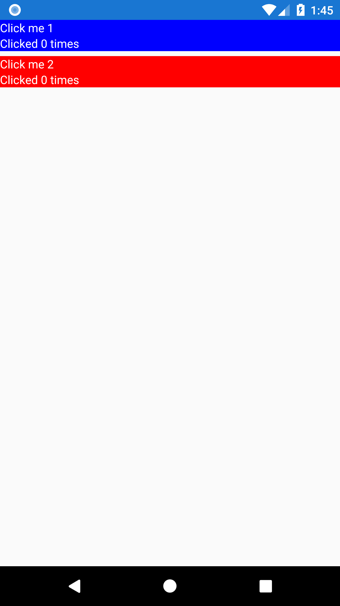
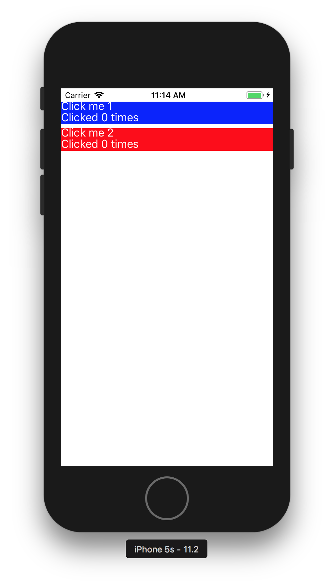
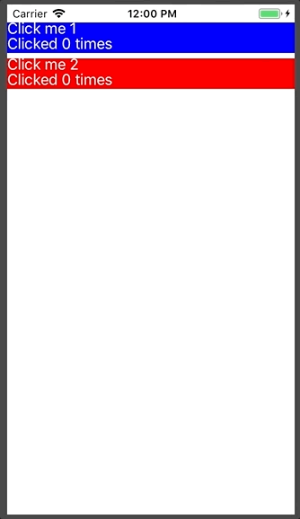

Xamarin Forms is powerful system and allows for a lot of customization out of the box.
However, sometimes you need to go beyond the default controls and build something custom. I recently
ran into this when I needed to build a multi-line custom button similiar to

The Button control in Xamarin Forms only allows a single line of text and doesn't provide a way
to customize the button's layout. You could create a custom control within Forms using a StackLayout and
a TapGestureRecognizer, but you would lose responsive behaviors like color changes on iOS and the ripple
effect on Android. This is where custom renderers come in.
Xamarin provides documentation on how to create a custom renderer in several situations here but there isn't anything specific to custom buttons, so I thought I'd write down what I did to create this effect. All of the code for this post is available on GitHub with tags for each step of the process. If you want to follow along, start with the tag "initial-view-model"
The first thing to do is to set up our view and view model so they handle any bindable data you need. In this case we'll create two buttons that, when clicked, increment a counter. The counter is displayed below each button. The view XAML is:
<?xml version="1.0" encoding="utf-8"?>
<ContentPage
xmlns="http://xamarin.com/schemas/2014/forms"
xmlns:x="http://schemas.microsoft.com/winfx/2009/xaml"
xmlns:local="clr-namespace:RippleRenderer"
x:Class="RippleRenderer.RippleRendererPage"
xmlns:ios="clr-namespace:Xamarin.Forms.PlatformConfiguration.iOSSpecific;assembly=Xamarin.Forms.Core"
ios:Page.UseSafeArea="true">
<StackLayout
Orientation="Vertical">
<Button Text="Click me 1" BackgroundColor="Blue" TextColor="White" Command="{Binding Button1ClickCommand}"/>
<StackLayout Orientation="Horizontal">
<Label Text="Button 1 click count: "/>
<Label Text="{Binding Button1ClickCount}" />
</StackLayout>
<Button Text="Click me 2" BackgroundColor="Red" TextColor="White" Command="{Binding Button2ClickCommand}"/>
<StackLayout Orientation="Horizontal">
<Label Text="Button 2 click count: "/>
<Label Text="{Binding Button2ClickCount}" />
</StackLayout>
</StackLayout>
</ContentPage>
And the view model code is
using System;
using System.ComponentModel;
using System.Runtime.CompilerServices;
using Xamarin.Forms;
namespace RippleRenderer
{
public class RippleRendererViewModel : INotifyPropertyChanged
{
public RippleRendererViewModel()
{
Button1ClickCommand = new Command(() => Button1ClickCount++);
Button2ClickCommand = new Command(() => Button2ClickCount++);
}
private int _button1ClickCount = 0;
public int Button1ClickCount
{
get => _button1ClickCount;
set
{
_button1ClickCount = value;
OnPropertyChanged();
}
}
private int _button2ClickCount = 0;
public int Button2ClickCount
{
get => _button2ClickCount;
set
{
_button2ClickCount = value;
OnPropertyChanged();
}
}
public Command Button1ClickCommand { get; set; }
public Command Button2ClickCommand { get; set; }
public event PropertyChangedEventHandler PropertyChanged;
protected virtual void OnPropertyChanged([CallerMemberName]string propertyName = "") =>
PropertyChanged?.Invoke(this, new PropertyChangedEventArgs(propertyName));
}
}
It may seem like overkill to set up the View this way even though we plan to replace the buttons
and labels with our own custom content, but it serves a purpose. This way we can verify that we
have all the bindings we need in place and working before we start getting into the more interesting, and
more complicated, renderer logic.
The first thing we need to do is determine what data we need to bind to our custom button. For this example we need four items: the button title, the button's click count, the button's click command, and the button's background color. We then create a custom control in the Forms project that subclasses View. It may seem like Button would be a better base class, but the Android button has similar limitations to the Xamarin Forms button and can't use a custom layout. To support Android, we need to use the more generic View type. Since our control's UI will be handled by custom renderers, we can create a class with no XAML component:
using Xamarin.Forms;
namespace RippleRenderer
{
public class IncrementingButton : View
{
public static readonly BindableProperty TitleProperty =
BindableProperty.Create("Title", typeof(string), typeof(IncrementingButton), string.Empty);
public string Title
{
get { return (string)GetValue(TitleProperty); }
set { SetValue(TitleProperty, value); }
}
public static readonly BindableProperty ClickCountProperty =
BindableProperty.Create("ClickCount", typeof(int), typeof(IncrementingButton), 0);
public int ClickCount
{
get { return (int)GetValue(ClickCountProperty); }
set { SetValue(ClickCountProperty, value); }
}
public Command Command
{
get => (Command)GetValue(CommandProperty);
set => SetValue(CommandProperty, value);
}
public static readonly BindableProperty CommandProperty =
BindableProperty.Create("Command", typeof(Command), typeof(IncrementingButton), null);
}
}
Notice that there is no BackgroundColor property in the code. This is because BackgroundColor is already
implemented by View and we can use that for our control.
Next we need to use the new control in our View. Since our control is in the same namespace as the view, we can just use the 'local' XML namespace created by Xamarin. If 'local' is missing or the control is in a different namespace, we would need to create a new XML namespace. Now we can use our new control just like any built-in control:
<?xml version="1.0" encoding="utf-8"?>
<ContentPage
xmlns="http://xamarin.com/schemas/2014/forms"
xmlns:x="http://schemas.microsoft.com/winfx/2009/xaml"
xmlns:local="clr-namespace:RippleRenderer"
x:Class="RippleRenderer.RippleRendererPage"
xmlns:ios="clr-namespace:Xamarin.Forms.PlatformConfiguration.iOSSpecific;assembly=Xamarin.Forms.Core"
ios:Page.UseSafeArea="true">
<StackLayout
Orientation="Vertical">
<local:IncrementingButton
Title="Click me 1"
Command="{Binding Button1ClickCommand}"
ClickCount="{Binding Button1ClickCount}"
BackgroundColor="Blue"/>
<local:IncrementingButton
Title="Click me 2"
Command="{Binding Button2ClickCommand}"
ClickCount="{Binding Button2ClickCount}"
BackgroundColor="Red"/>
</StackLayout>
</ContentPage>
Note: at this point if we run the app we won't be able to see anything on any platform. Since we haven't
create a custom renderer yet, Xamarin defaults to a basic View renderer. And since our views have no content,
nothing is displayed. If you want to verify that Xamarin is in fact rendering a view, you can add a
non-zero HeightRequest and run the application. The completed code for this step is available at tag
"forms-custom-control".
Now that we have the custom control in place, we need to tell Xamarin Forms how to display it. The first thing we need to do is create a layout. For this example we're using a basic LinearLayout with two TextViews. Each TextView needs an Id so we can add text later.
<?xml version="1.0" encoding="utf-8"?>
<LinearLayout xmlns:android="http://schemas.android.com/apk/res/android"
android:orientation="vertical"
android:layout_width="match_parent"
android:layout_height="match_parent">
<TextView
android:id="@+id/ButtonTitle"
android:layout_width="wrap_content"
android:layout_height="wrap_content"
android:textColor="#FFFFFF" />
<TextView
android:id="@+id/ClickCount"
android:layout_width="wrap_content"
android:layout_height="wrap_content"
android:textColor="#FFFFFF" />
</LinearLayout>
Next we need to create our custom renderer and consume the layout. This is where things start to get fun, so we're going to take it in multiple steps:
Now we'll create a basic renderer that displays our control with the initial data. We create a class called IncrementingButtonRenderer_Android in the Android project. The "_Android" part of the name is not necessary, but useful to help differentiate our renderers on each platform. The class should be a subclass of ViewRenderer<IncrementingButton, Android.Views.View>. We need to implement the constructor IncrementingButtonRenderer_Android(Context context) : base(context) and store Context in a private field for later use.
using System.ComponentModel;
using Android.Content;
using Android.Views;
using Android.Widget;
using RippleRenderer;
using RippleRenderer.Droid;
using Xamarin.Forms;
using Xamarin.Forms.Platform.Android;
namespace RippleRenderer.Droid
{
public class IncrementingButtonRenderer_Android : ViewRenderer
{
private readonly Context _context;
public IncrementingButtonRenderer_Android(Context context) : base(context)
{
_context = context;
}
}
}
Next we'll override OnElement changed. In it we need to inflate our layout, set the text on our TextViews, and tell Xamarin Forms to use the inflated layout for this control. It's good practice to wrap this logic in an if block to prevent re-initilization. We also want to store references to our TextViews in private fields for later use.
private TextView _buttonTitleView; private TextView _clickCountView; protected override void OnElementChanged(ElementChangedEventArgse) { base.OnElementChanged(e); if (Control == null) { // Inflate the IncrementingButton layout var inflater = _context.GetSystemService(Context.LayoutInflaterService) as LayoutInflater; var rootLayout = inflater.Inflate(Resource.Layout.IncrementingButton, null, false); // Set text on Textviews _buttonTitleView = rootLayout.FindViewById (Resource.Id.ButtonTitle); _buttonTitleView.Text = Element.Title; _clickCountView = rootLayout.FindViewById (Resource.Id.ClickCount); _clickCountView.Text = $"Clicked {Element.ClickCount} times"; // Tell Xamarin to user our layout for the control SetNativeControl(rootLayout); } }
The final step for the basic renderer is to add an attribute telling Xamarin Forms to use our custom renderer for the IncrementingButton control.
[assembly: ExportRenderer(typeof(IncrementingButton), typeof(IncrementingButtonRenderer_Android))]
namespace RippleRenderer.Droid
{
public class IncrementingButtonRenderer_Android : ViewRenderer
{
...
At this point we can run the application and see our custom buttons on the screen.
The completed code for this step is available at tag "android-initial-custom-control". Next we'll add the ripple effect.
Now that the renderer is in place, we want to start giving feedback to the user when they touch our button. On Android we're going to use the Ripple effect, which is availabile starting in API version 21. We'll use Android's Drawable classes to create a statelist that handles the ripple behavior for us. Since we have a different background for each button, we need to create the drawable in code rather than in an xml file.
private void SetBackground(Android.Views.View rootLayout)
{
// Get the background color from Forms element
var backgroundColor = Element.BackgroundColor.ToAndroid();
// Create statelist to handle ripple effect
var enabledBackground = new GradientDrawable(GradientDrawable.Orientation.LeftRight, new int[] { backgroundColor, backgroundColor });
var stateList = new StateListDrawable();
var rippleItem = new RippleDrawable(ColorStateList.ValueOf(Android.Graphics.Color.White),
enabledBackground,
null);
stateList.AddState(new[] { Android.Resource.Attribute.StateEnabled }, rippleItem);
// Assign background
rootLayout.Background = stateList;
}
Call this method in OnElementChanged just before SetNativeControl. If you need to support older versions you can wrap this code in an if block checking for Build.VERSION.SdkInt >= BuildVersionCodes.Lollipop
and implement alternate logic in the else block.
If we try to run now, we'll notice that nothing happens when you press the buttons. This is because we need to tell Android to respond to click events on our LinearLayout
<LinearLayout xmlns:android="http://schemas.android.com/apk/res/android"
android:orientation="vertical"
android:layout_width="match_parent"
android:layout_height="match_parent"
android:clickable="true">
With this in place, we can run the app and watch the ripple effect respond to our touchesThere are two steps remaining to make this button fully functional on Android. First we need to call the bound command when the user taps the button. This can be done in a single line of code in OnElementChanged, right after SetNativeControl
...
// Tell Xamarin to user our layout for the control
SetNativeControl(rootLayout);
// Execute the bound command on click
rootLayout.Click += (s, a) => Element.Command?.Execute(null);
}
Next we need to update the click counts we show the user. For this we override a new method, OnElementPropertyChanged, and watch for any changes to the ClickCountProperty.
protected override void OnElementPropertyChanged(object sender, PropertyChangedEventArgs e)
{
base.OnElementPropertyChanged(sender, e);
if (e.PropertyName == IncrementingButton.ClickCountProperty.PropertyName)
{
_clickCountView.Text = $"Clicked {Element.ClickCount} times";
}
}
Now we can run the app and see our click counts
The completed code for this step is available at tag "android-update-click-count". Now that Android is complete, we'll switch over to iOS and implement a renderer there.
Creating the custom renderer in iOS follows the same basic steps we used for Android. The only differences are that we'll create the layout in code and we're going to change the background color on tap instead of showing the Android ripple effect.
The first thing we'll do is create a basic renderer that displays our control with the initial data. We create a class called IncrementingButtonRenderer_iOS in the iOS project. The "_iOS" part of the name is not necessary, but useful to help differentiate our renderers on each platform. The class should be a subclass of ViewRenderer<IncrementingButton, UIView>.
using RippleRenderer;
using RippleRenderer.iOS;
using System;
using System.ComponentModel;
using UIKit;
using Xamarin.Forms;
using Xamarin.Forms.Platform.iOS;
namespace RippleRenderer.iOS
{
class IncrementingButtonRenderer_iOS : ViewRenderer
{
}
}
Next we'll override OnElement changed. In it we need to create our layout and set It's good practice to wrap this logic in an if block to prevent re-initilization. We also want to store references to our UILabels in private fields for later use.
private UILabel _buttonTitleLabel; private UILabel _clickCountLabel; protected override void OnElementChanged(ElementChangedEventArgse) { base.OnElementChanged(e); var rootView = CreateLayout(); // Tell Xamarin to user our layout for the control SetNativeControl(rootView); } private UIButton CreateLayout() { var rootView = new UIButton { BackgroundColor = Element.BackgroundColor.ToUIColor(), UserInteractionEnabled = true, }; // Create button title label _buttonTitleLabel = new UILabel { Text = Element.Title, TextColor = UIColor.White, TranslatesAutoresizingMaskIntoConstraints = false, }; rootView.AddSubview(_buttonTitleLabel); _buttonTitleLabel.TopAnchor.ConstraintEqualTo(rootView.TopAnchor).Active = true; _buttonTitleLabel.LeftAnchor.ConstraintEqualTo(rootView.LeftAnchor).Active = true; // Create Click Count label _clickCountLabel = new UILabel { Text = $"Clicked {Element.ClickCount} times", TextColor = UIColor.White, TranslatesAutoresizingMaskIntoConstraints = false, }; rootView.AddSubview(_clickCountLabel); _clickCountLabel.TopAnchor.ConstraintEqualTo(_buttonTitleLabel.BottomAnchor).Active = true; _clickCountLabel.LeftAnchor.ConstraintEqualTo(rootView.LeftAnchor).Active = true; _clickCountLabel.BottomAnchor.ConstraintEqualTo(rootView.BottomAnchor).Active = true; return rootView; }
The final step for the basic renderer is to add an attribute telling Xamarin Forms to use our custom renderer for the IncrementingButton control.
[assembly: ExportRenderer(typeof(IncrementingButton), typeof(IncrementingButtonRenderer_iOS))]
namespace RippleRenderer.iOS
{
public class IncrementingButtonRenderer_iOS : ViewRenderer
{
...
At this point we can run the application and see our custom buttons on the screen.

The completed code for this step is available at tag "ios-initial-custom-control". Next we'll add the touch effect.
Now that the renderer is in place, we want to start giving feedback to the user when they touch our button. On iOS we're going to add transparency the background color while the user is pressing our button. We'll create a new method called AddTouchBehavior that we call just after CreateLayout()
protected override void OnElementChanged(ElementChangedEventArgsWith this in place, we can run the app and watch the button background respond to our touchese) { base.OnElementChanged(e); var rootView = CreateLayout(); AddTouchBehavior(rootView); // Tell Xamarin to user our layout for the control SetNativeControl(rootView); } ... private void AddTouchBehavior(UIButton rootView) { rootView.TouchDown += AddTouchBackgroundColor; rootView.TouchDragEnter += AddTouchBackgroundColor; rootView.TouchUpInside += RemoveTouchBackgroundColor; rootView.TouchCancel += RemoveTouchBackgroundColor; rootView.TouchDragExit += RemoveTouchBackgroundColor; } private void AddTouchBackgroundColor(object sender, EventArgs e) { (sender as UIView).BackgroundColor = Element.BackgroundColor.ToUIColor().ColorWithAlpha(.5f); } private void RemoveTouchBackgroundColor(object sender, EventArgs e) { (sender as UIView).BackgroundColor = Element.BackgroundColor.ToUIColor(); }
There are two steps remaining to make this button fully functional on iOS. First we need to call the bound command when the user taps the button. This can be done in two lines of code in our AddTouchBehavior method
private void AddTouchBehavior(UIButton rootView)
{
var tapGesture = new UITapGestureRecognizer(() => Element.Command?.Execute(null));
rootView.AddGestureRecognizer(tapGesture);
...
Next we need to update the click counts we show the user. For this we override a new method, OnElementPropertyChanged, and watch for any changes to the ClickCountProperty.
protected override void OnElementPropertyChanged(object sender, PropertyChangedEventArgs e)
{
base.OnElementPropertyChanged(sender, e);
if (e.PropertyName == IncrementingButton.ClickCountProperty.PropertyName)
{
_clickCountView.Text = $"Clicked {Element.ClickCount} times";
}
}
Now we can run the app and see our click counts

The completed code for this step is available at tag "ios-update-click-count".
And there we have it! A fully customized button in Xamarin Forms that works on both iOS and Android. From here we can adjust the button's rendering and behavior as needed on both OSs.